SCRAPS is an independent editorial magazine created to question the concept of economic
sustainability through the lens of waste. The project overturns the traditional view that associates waste with loss,
instead proposing it as a space for reflection, possibility, and the transformation of value.

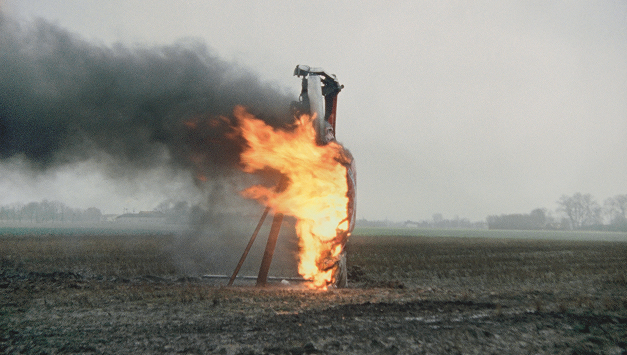
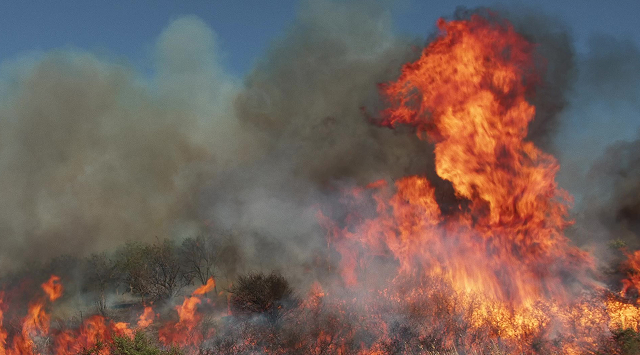
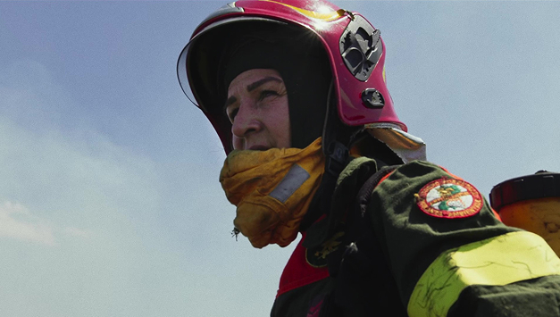
The magazine investigates the relationship between value and waste within a contemporary
economic system dominated by the linear logic of consumption and immediate profit.
SCRAPS offers an alternative interpretation of sustainability, understood as a dynamic balance between economy,
society, and environment. The first issue, Burn, uses fire as a narrative and visual metaphor to describe
processes of destruction and regeneration. Subsequent issues, such as Hide and Tear, will further explore the theme through different actions.
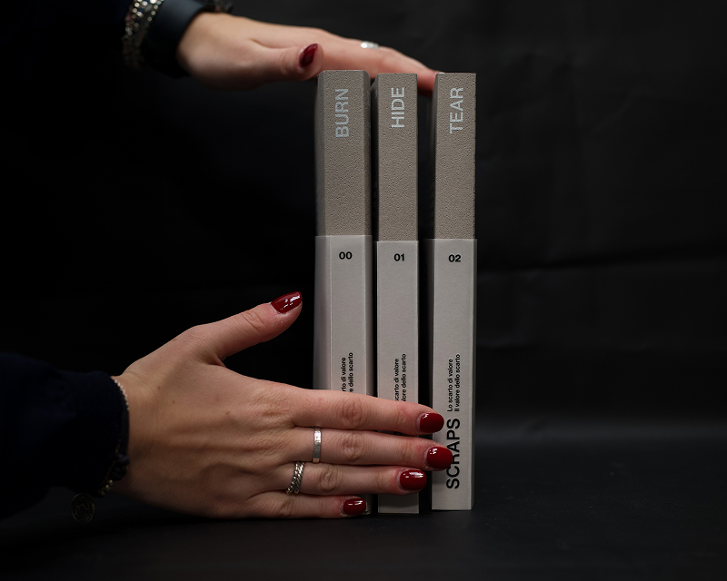
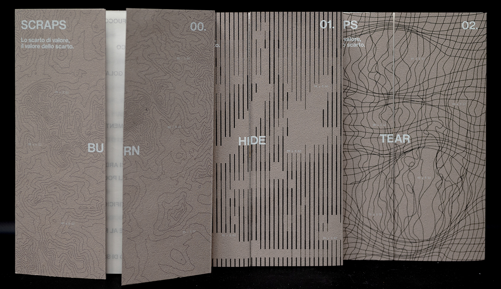
 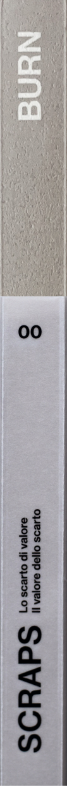
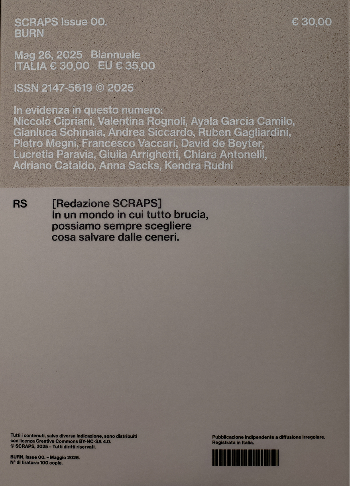
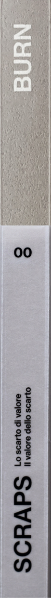
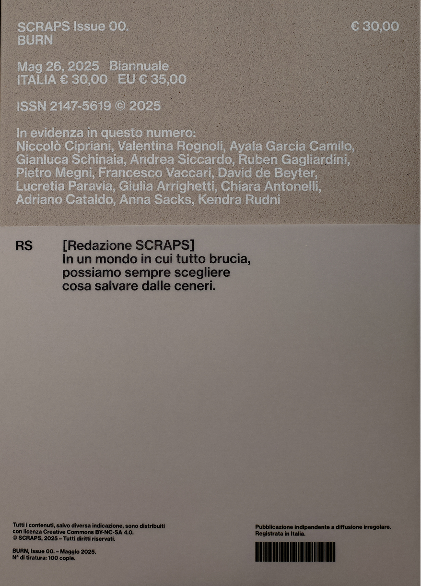
Editorial and layout choices are designed to make the magazine not only a reading tool
but also an instrument for study and learning.
SCRAPS is conceived to guide the reader through a slow form of consultation,
encouraging analysis and comparison of contents.
One of the central design aspects is the choice of paper, differentiated according to the type of content.
In the section dedicated to reports and complaints, the use of tracing paper creates a double level of reading:
on the surface, the official narratives that companies promote or would like their employees to express;
beneath, on white paper, the full statements and complaints voiced by the employees themselves.
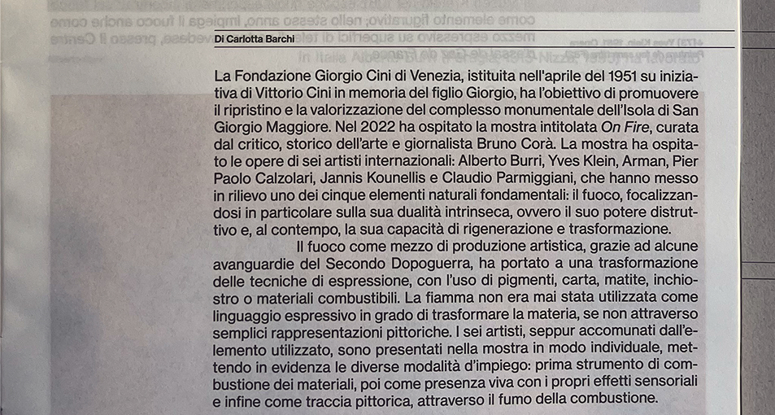
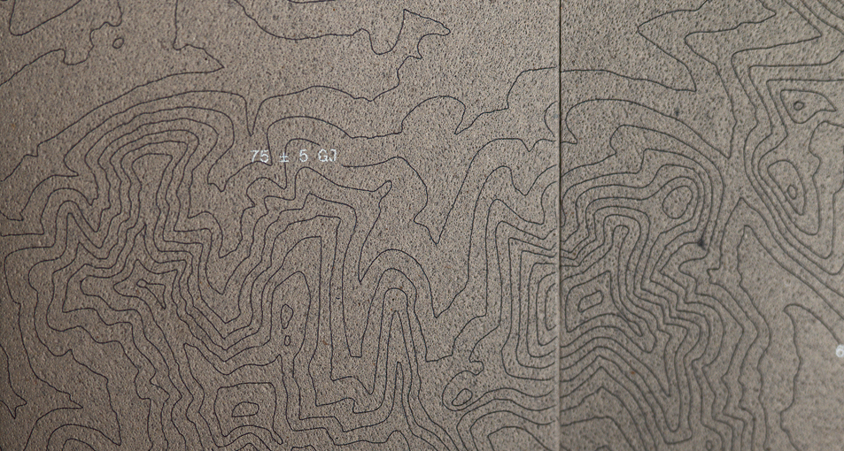
SCRAPS extends beyond the magazine through an intertextual action that actively involves the reader.
On the occasion of issue 00, adhesive stickers were created to denounce the waste of resources involved in the
production of various products. A video accompanying the release
of the magazine documents the editorial team’s action and invites a collective gesture of public denunciation.
 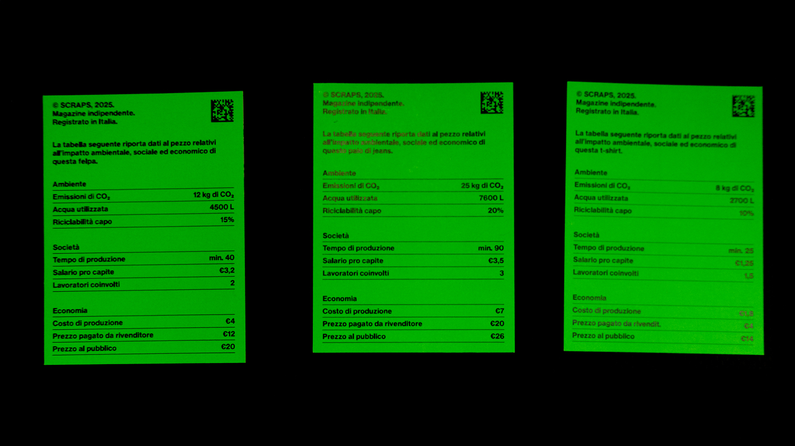
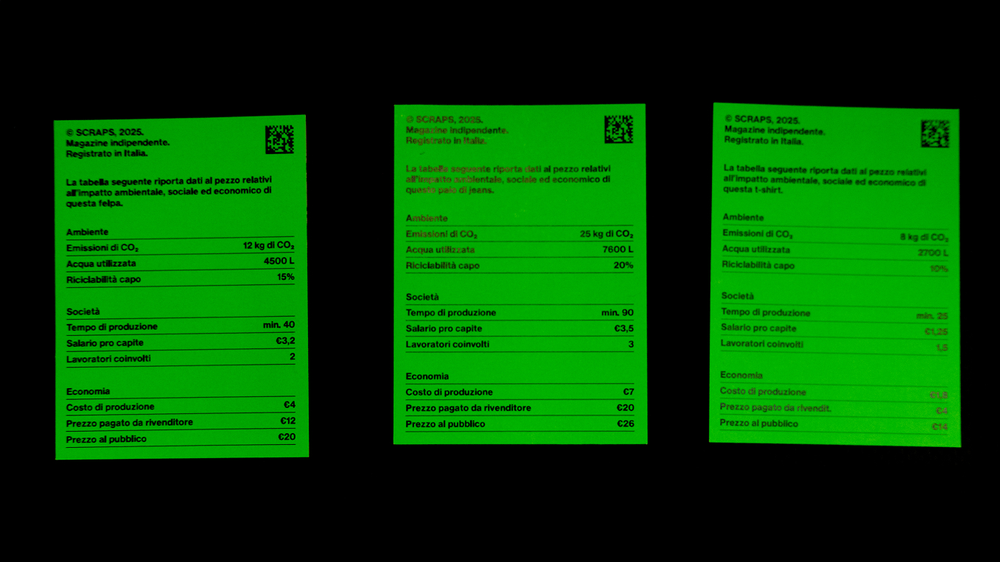